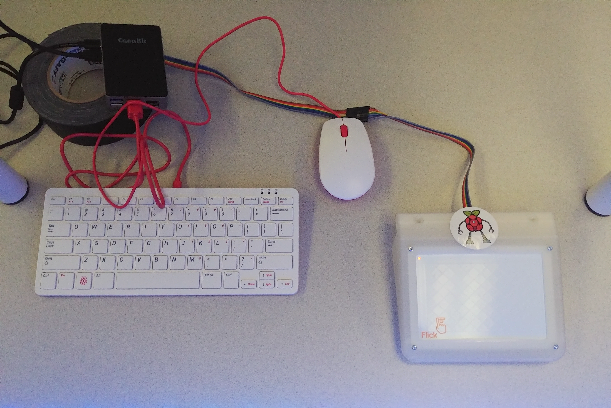
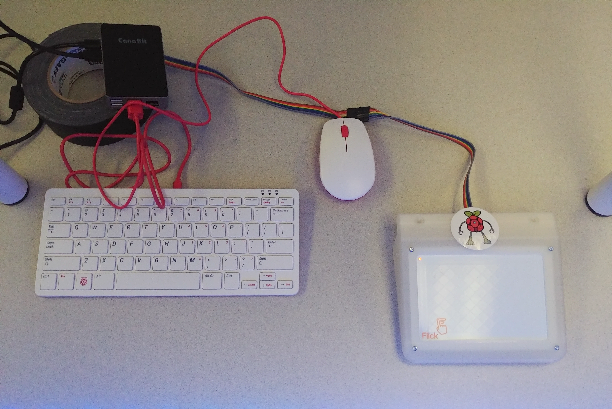

PROJECT MAMMOTH*
Role: Project lead, 3D modeller
Year: 2021 - 2022
Timeline: 8 months


A NEW TAKE ON LEARNING
How can we educate the public about biodiversity loss in a way that encourages engagement without causing more harm?
Documentaries are useful method for bringing and awareness and attention to the critical nature of endangered species, but what if there was a way to do it using DIY hologram technology? This is what we set out to discover, integrating the topic of biodiversity loss in marine species as our focus point.
R&D: ORIGINS
Marine species around the world are at risk.
While endangered species and animal extinction have already been studied in media and films (think Our Planet and other documentaries narrated by the legendary Sir David Attenborough), we discovered that there are many species whose struggles are unknown by the general public due to a lack of exposure.
169,000+
The number of species on the International Union for Conversation of Nature's (IUCN) Red List of threatened species.
47,000+
The number of species on the IUCN Red List that are currently threatened with extinction.
1,473
The number of marine species currently on the IUCN Red List that are vulnerable, endangered or critically endangered.
To diversify our selections, we focused on the world's oceanic and polar regions — selecting a total of eight (8) unique marine species to highlight through our hologram.
- African penguin — Affected by lack of food from overfishing and climate change.
- Blue-footed booby — Affected by lack of food from overfishing and climate change.
- Hawksbill sea turtle — Affected by overfishing, shell poaching, ocean pollution and climate change.
- Española marine iguana — Affected by natural predators and climate change.
- Striped smooth hound shark — Affected by significant pressure from commerical and artisan fisheries.
- North Atlantic right whale — Affected by threats of entaglement in fishing gear and vessel strikes.
- Acropora jacquelinae coral — Affected by coral bleaching, human activity in waters, starfish species and diseases.
- Arctic polar bear — Affected by lack of food and habit change.
Using Blender, myself and members of the modelling team created eight low-poly models of each selected marine species for the installation. Distincitive markings and details were added via texturing to aid with recognition.

African penguin
Model by Tany Dourev
Blue-footed booby
Model by Samantha Savage
Hawksbill sea turtle
Model by Will Paskulin
Española marine iguana
Model by Samantha Savage
Striped smooth hound shark
Model by Tany Dourev
North Atlantic right whale
Model by Tany Dourev & Xu Yankeer
Acropora jacquelinae coral
Model by Tany Dourev
Arctic polar bear
Model by Tany Dourev— Dr. Aaron Mauro, Associate Professor & DDH Chair at Brock University • Source: Brock News (x)
R&D: THE BUILDING
Hologram crafting for beginners.
We selected DIY hologram technology as our visual storytelling method, with the goal of seeing how it could be used for educational purposes. Until now, no one in the program had created a project using holograms, which gave us the opportunity to put together an installation with a strong impact through its design. We began by using videos of small-scale, DIY holograms created with pieces of a CD case, tape and a phone. Then, we transformed this into a mid-scale hologram for prototyping using plastic sheets; for the installation, we upscaled it with plexiglass and a TV monitor.


One of our biggest challenges was creating the media that would be displayed on the hologram. Our installation team reverse-engineered a system for hologram video creation, basing the media size on the overall dimensions of our plexiglass prism. A hologram video consisted of a combined series of four renders, each encompassing a side of the 3D object and positioned to face each of the cardinal directions. Renders were animated and exported through Blender.
ENVIRONMENTS
Creating lanscapes for each species.
In order to properly apply the physics of hologram refraction to the installation, we brainstormed ways to suspend the hologram media through environmental renders. We wanted to provide more information about habitats for each species; this led us to develop dome-based environments, containing the animal render and surrounding elements that depicted its home. Through several tests, we discovered that this approach was the most successful in simulating a real hologram and the immersion would be maintained without revealing what actually powered the images.


INTERACTIVITY
Merging code with motion.
One of our goals for the installation was to establish a way that viewers could interact with and control the hologram media. The coding team, with assistance from our supervisor, created a joint Flick motion sensor + Raspberry Pi + Python system that allowed us to switch between visuals. Compared to larger-scale/room-based installations, our system was humble yet powerful enough to operate videos and audio at the same time.
 

The installation team performed several usability tests to define motions that would be universal and understood by audiences of all ages. Gestures that mimicked movements familiar to phone users were selected (ex. swiping left on a phone to see the next photo = moving your hand to the left for the next visual; pressing the "up" button to increase the volume = moving your hand up to increase the sound levels).
VISUAL IDENTITY
Branding Project Mammoth.
Project Mammoth's visual identity was designed to encapsulate a playful approach to biodiversity awareness and education. We envisioned our installation as something that would cater to audiences of all ages, encouraging both children and adults alike to interact with the project. The team's decision to select a mammoth as the project logo stems from the extinction of the elephantid genus Mammuthus, a mammal species that disappeared during the Holocene epoch due to climate change and human hunting. While mammoths are not classified as marine species, we belived that their fate best represented the critical nature of our topic and served as a reminder that the animals we highlighted could follow the same path of extinction if humanity doesn't strengthen its conservation efforts to protect them.


CREDITS
Project Lead: Tany Dourev
Secondary Lead: Samantha Savage
Research: Kathleen MacDonald, Evan Mason, Will Paskulin, Rogo Jean
Modelling: Tany Dourev, Will Paskulin, Samantha Savage, Xu Yankeer (Coco)
Sound & Narration: Evan Mason, Wu Dongjian (Joey), Rigel Quindipan, Xu Yankeer (Coco)
Installation: Kathleen MacDonald, Evan Mason, Rogo Jean, Rigel Quindipan, Shannon Kelly, Patrick Arenas
Coding: Shannon Kelly, Matthew McNeil
Branding: Kathleen MacDonald, Samantha Savage, Will Paskulin
Thank you to Dr. Aaron Mauro of Brock University for his support and guidance throughout the project, and to Alison Innes of the Brock News for her photography.
© Tany Dourev, 2025.
— v8.1 / ∞